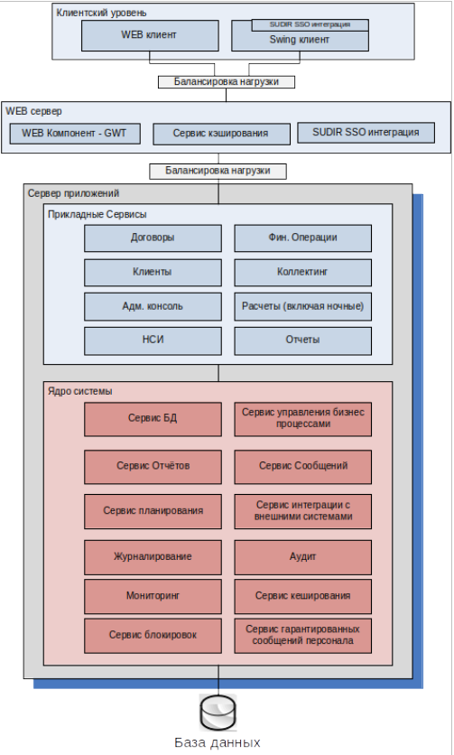

|
Система ИАСК для Сбербанка
|
|
Модель архитектуры

Общая архитектура системы представлена на рисунке и включает в себя следующие компоненты:
- Прикладные сервисы, отвечающие за выполнение бизнес логики
- Ядро системы, отвечает за базовые сервисы
- Клиентский уровень и WEB сервер, отвечающий за описание и представление бизнес объектов пользователю, то есть интерфейс системы
- Балансировка нагрузки, отвечает за равномерное распределение нагрузки по компонентам
- База данных, как основное хранилище информации
Данная архитектура решает данные проблемы:
- Сложная структура данных – решается с помощью выбранного ORM и шаблона DAO
- Долгие транзакции – решаются с помощью гибкости бизнес-процессов, а также поддерживаются механизмом сервиса управлениями бизнес процессами, а также платформой WebSphere и Oracle
- Асинхронные процессы - поддерживаются механизмом сервиса управлениями бизнес процессами, но также возможны и синхронные
- Периодические серверные задачи - поддерживаются механизмом сервиса планировщика
- Сложная и часто изменяемая бизнес логика – поддерживается с помощью модульной архитектуры
- Крайне нагруженный интерфейс = возможен гибкостью и возможностями платформы интерфейсной части системы
- Наследие предыдущей архитектуры (хранимые процедуры и толстый клиент) – есть возможность использовать и оптимизировать текущие наработки
В рамках данной архитектуры сервисы делятся на две категории:
- Общесистемные или ресурсные сервисы, т.н. «Ядро системы» такие как сервис кэширования, сервисы журналирования, аудита и мониторинга
- Бизнес сервисы, т.н. «Прикладные сервисы», отвечающие за описания, бизнес процессов в системе и связаны между собой посредством базовых сервисов и являются не зависимыми друг от друга и могут быть связаны только с ресурсными сервисами через специализированные интерфейсы.
Такое разделение позволяет оставить существующие наработки без изменений и использовать их повторно. В качестве протокола взаимодействия с шиной данных может выступать любой протокол, поддерживаемый JEE спецификацией, что позволит легко масштабировать систему как по горизонтали, так и по вертикали.
Подсистемы
Система будет разбита на несколько независимых подсистем Ядро Системы (далее IASKCF – IASK common framework), Прикладные сервисы (далее Application Services) и интерфейс пользователя (далее UI).
Подсистема IASKCF состоит из следующих компонент:
- Сервис БД (далее Database Facade) – отвечает за взаимодействие пользовательского интерфейса с базой данных
- Сервис управления бизнес процессами (далее Business Process Management) – отвечает за описание легковесных операций с бизнес объектами, такими как сохранение данных, перевод бизнес объект из состояния в состоянии, а так же за управлением транзакций
- Сервис отчётов (далее Reporting Service) – отвечает за формирования отчетности в системе в любой формат, поддерживает как асинхронный, так и синхронный режим
- Сервис сообщений (далее Message Service) – отвечает за интеграцию с внешними системами
- Планировщик (далее Scheduling Service) – отвечает за асинхронное выполнение задач
- Сервис интеграции с внешними системами (далее Integration Service) – отвечает за интеграцию с внешними системами. Также включает в себя эмулятор внешних систем (далее External System Emulator)
- Журналирование (далее Logging Configuration) – отвечает за настройку журналирования системы
- Аудит (далее Audit Configuration) – отвечает за настройку аудита системы
- Мониторинг (далее Monitoring Configuration) – отвечает за настройку мониторинга системы
- Сервис блокировок (далее Lock Service) – отвечает за механизм блокировок
- Сервис гарантированных сообщений персонала (далее Personal Messaging Service) – отвечает механизм блокировок
Подсистема Application Services состоит из следующих групп компонент:
- Договоры
- Финансовые операции
- Клиенты
- Коллектинг
- Административная консоль
- Расчёты
- НСИ
- Отчёты
Интерфейс пользователя — состоит из следующих компонент:
- SWING – отвечает за отображения интерфейса пользователя с помощью библиотеки SWING
- GWT – отвечает за отображения интерфейса пользователя
- SUDIR SSO Integration – отвечает за авторизацию пользователя
- Logging – отвечает за журналирование клиентского приложения
В качестве протокола взаимодействия web сервера и подсистемы IASKCF может выступать:
- RMI/IIOP – стандартный протокол Java EE
- SOAP over HTTP/HTTPS – стандартный протокол web-сервисов
- JMS – спецификация Java сообщений
Для всех клиентов web сервера обязателен HTTP/HTTPS.
Общие компоненты, используемые в системе, могут быть как ресурсными сервисами, так и клиентскими библиотеками которые необходимо использовать всем компонентам. К ним относиться все сервисы IASKCF. По возможности, будут использоваться существующие наработки.
Прикладные сервисы выполняют основную бизнес логику приложения.
Принципы разбиения системы на подсистемы
В основе разбиения системы на подсистемы лежит идея модульности, то есть система будет разбита на ряд компонент и сервисов, которые будут связаны между собой посредством Spring IoC контейнера и будут независимыми друг от друга, что позволит их независимо тестировать и масштабировать. За последовательность вызовов того или иного сервиса будет отвечать IASKCF, кроме сервисов, которые являются служебными такими как кэширование, журналирование, аудит и мониторинг.
Разбиение на модули
Предлагается следующая минимальная структура модулей системы:
- Интерфейсная часть
- Модули прикладных форм
- Модули общей (системной) логики
- Модули серверной логики
- Прикладные сервисы
- Модули прикладных сервисов
- Модули прикладных системных сервисов
- Ядро системы
- Модули системных сервисов
|